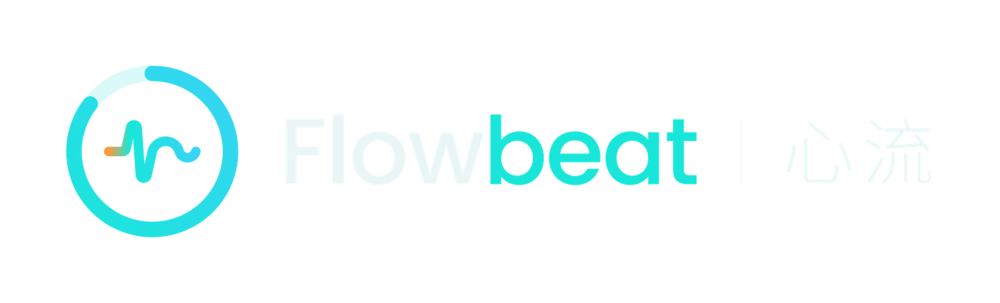
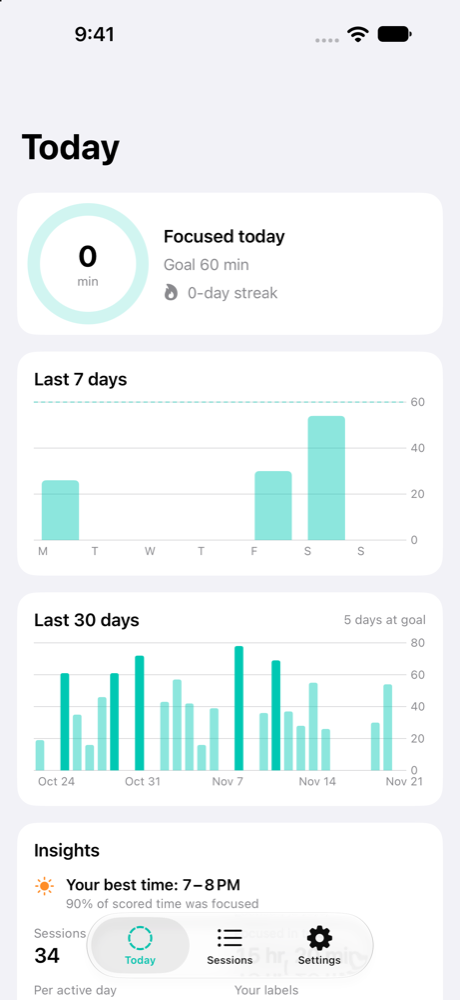
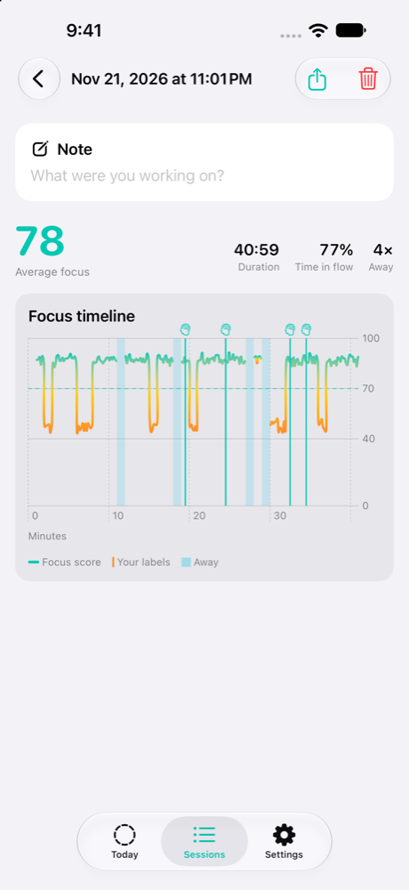
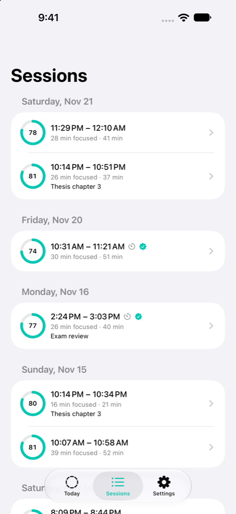
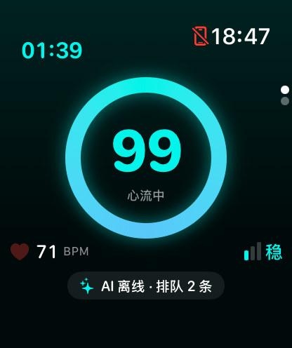
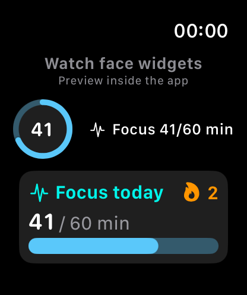
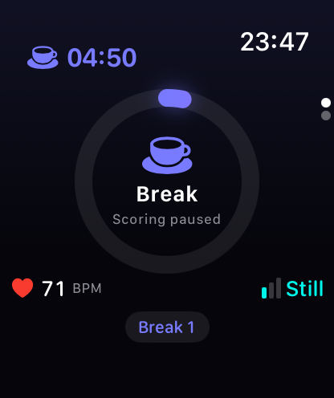
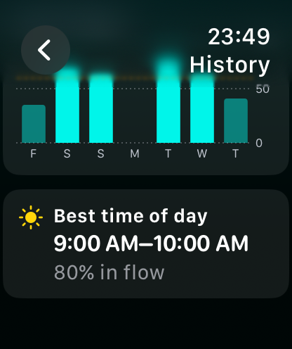

On-device machine learning
Learns what focus looks like for you.
Tap Focused or Distracted during a session. Once you have 8 labels of each, a logistic regression trains on the watch itself and is blended 50/50 with the rule score.7

Are you really focused? Let your pulse tell you. 😏
For Apple Watch and iPhone
Your focus,
on your wrist.
A live 0–100 focus score from your heart rate and wrist motion, computed every second on the watch. Every session lands on your iPhone.

Watch simulator screenshot.3
Heart rate from HealthKit. Wrist motion from CoreMotion. One transparent score, updated every second, with no server of ours in between.
How it works
No black box. One baseline, two penalties and a little smoothing. Every constant lives in FocusScorer.swift.
A Mind & Body workout session keeps heart rate arriving every few seconds, then is discarded so nothing lands in Health. Wrist motion is CoreMotion’s user acceleration at 25 Hz, averaged over the last 10 seconds.
The first 60 seconds learn your resting baseline. It is the median heart rate, so one spike from shifting in your chair doesn’t move it. Seconds spent walking are left out.
Wrist motion above 0.02 g costs up to 60 points, in full at 0.15 g. Heart rate more than 5 bpm over baseline costs up to 40, in full at 20 bpm. Below both, you keep all 100.
The ring moves a fifth of the way toward each new reading (α = 0.2). One shake of the hand nudges it. It doesn’t knock you out of flow.
When activity recognition reports walking, scoring pauses and the time counts as away. Once you sit back down, the heart-rate penalty waits 60 seconds while your pulse settles.
70 and up is flow. 40 to 70, a bit distracted. Under 40, off track. After 3 minutes off track the watch taps once, at most every 10 minutes, and never while you walk.
Try it
This watch runs Flowbeat’s scoring code, ported line by line from Swift.2 Replay a session the watch simulator recorded, or be the sensors yourself.
Tap the dots, press the crown or swipe on the screen for labels and End.
245 seconds the watch simulator recorded in demo mode.4 Each second, the ring here should equal the score the Swift app computed.
Ported from simulateSensors(): after calibration, a 60-second cycle of randomized sensor data.
Motion is instantaneous wrist acceleration. The app averages it over 10 seconds, so the ring follows with a lag.
The recording used the simulator’s 10-second calibration, so replay always does too.
Verified against Swift
The repo ships a session the watch simulator recorded: every input, and the score the Swift code computed each second.4 Your browser just re-scored all of it.
largest difference between the Swift app and this page, across 179 scored seconds.
Flowbeat for iPhone
End a session on the watch and it arrives on your iPhone in the background. A real database, your goal and your trends, with heart rate kept off iCloud.



iOS simulator with a generated sample month; not measurements.3
SwiftData on the iPhone. Lists and charts read small summary fields and per-minute buckets; the full per-second session is decoded only when you open it.
App Review guideline 5.1.3 forbids health data in iCloud. Heart rate is stripped before anything reaches the synced store, and a unit test checks it. The original file stays on the device.
The watch keeps a ledger of what the iPhone confirmed and resends the rest, so installing the iPhone app weeks later backfills your history.
Notes and search on every session, CSV export of everything, JSON export of one session, and a daily goal that syncs with the watch.
Features
On-device machine learning
Tap Focused or Distracted during a session. Once you have 8 labels of each, a logistic regression trains on the watch itself and is blended 50/50 with the rule score.7
Siri and Shortcuts
App Intents for Siri, Shortcuts and the Action button, with phrases in English and Chinese.
Offline queue
In developer builds, if the judge backend is down, windows wait on the watch (up to 30, backing off from 15 s to 5 min) and arrive in order once it’s back.

UI shown in Simplified Chinese.
WidgetKit complications
Today’s focused minutes and goal progress, in circular, rectangular, inline and corner styles.

Widget views previewed inside the app.3
Pomodoro and goals
25 minutes on, 5 off by default, with a haptic at each switch. Scoring pauses on breaks.

Simulator screenshot.3
History
Today against a daily goal, the last 7 days in Swift Charts, your streak and your best time of day.

Sample week in demo mode.3
Away detection
Getting up pauses the score instead of counting against you. Steps and time away show up on the summary.
Privacy
No backend, no account, no tracking. Sessions go from the watch to your iPhone and your own iCloud, and heart rate never leaves your devices. A script scans the Release binary to prove the judge’s network code is gone.
LLM judge · developer builds
Every 2 minutes, developer builds send a statistics-only summary of the window to a small FastAPI backend, and an LLM answers with a state, a score and a reason. Early runs just copied the watch’s own score. So the score came out of the prompt.
Measured over 90 real API calls on 6 synthetic windows.6 Independent isn’t the same as correct: without the anchor, the models disagreed on ambiguous windows.
qwen3.8-flash, the default modelReal qwen3.8-flash responses to the recorded windows, translated from Chinese.
Screens




Screenshots from the watchOS simulator with simulated sensors and a fixed sample week.3
Status
Built in the open, and honest about what hasn’t been proven yet.
162 Swift logic tests, 11 database tests, 48 backend tests and both apps built in CI, all green.
iPhone and watch ship together in v1. Build 1.0.0 (2) is in TestFlight. The privacy policy and support page are live; it hasn’t been submitted for review yet.1
The Release build now runs on an Apple Watch Series 9. Results aren’t in yet, and the score hasn’t been validated against real labeled data.5
“The simulator has no real sensors, so scores there are meaningless. Only a real watch can show whether the score means anything.”From the Flowbeat README
Apple Watch, watchOS 10 or later, and iPhone, iOS 17 or later. Both ship in v1.
The watch app scores on its own; the iPhone keeps every session.
Swift and SwiftUI. Pure logic in a local Swift package, FlowbeatCore, tested on macOS and the watchOS simulator.
Swift Charts · XcodeGen · GitHub Actions CI
HKWorkoutSession, discarded at the endLogistic regression trained by gradient descent on your own labels, at least 8 per class, blended 50/50 with the rule score.
Developer builds only. FastAPI backend with Pydantic validation, token auth, an 8-second timeout, one retry and a rule-score fallback. Qwen qwen3.8-flash by default.
Offline queue on the watch: FIFO, capacity 30, 1-hour max age, backoff from 15 s to 5 min.
No account, no tracking, no server of ours. App Privacy: Data Not Collected. iCloud sync goes to the user’s private database and carries no health data.
The LLM judge is compiled out of Release, checked by scripts/verify_release_offline.sh: Debug 6/6 network markers, Release 0/6.
English and Simplified Chinese.
Every UI string translated: 122 on the watch, 7 in the widget, 65 on the iPhone, 0 missing.